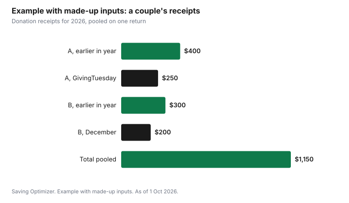

Events · Canada
Giving Tuesday and Holiday Donations: Getting the Charitable Tax Credit Right in Canada
To get the charitable donation tax credit right in Canada, give to a registered charity or other qualified donee, get an official donation receipt, make the gift by 31 December to count it for that tax year, and claim it on Schedule 9 of your return. GivingTuesday falls on Tuesday 1 December 2026, so a gift that day counts for 2026. The credit is non-refundable, which means it reduces tax you owe but does not create a refund on its own. You can claim donations up to 75% of your net income in most cases, carry unused donations forward for up to five years, and add your spouse's or common-law partner's receipts to one return. Those three rules decide how much the same gift saves.
Key takeaways
- GivingTuesday 2026 is Tuesday 1 December. A gift that day counts for the 2026 tax year.
- You need an official receipt from a qualified donee, such as a registered charity. Charities are not required to issue receipts, so ask.
- Check registration with the CRA's charity search before you give.
- Claim up to 75% of net income in a year; unused donations carry forward up to five years (ten for ecologically sensitive land).
- You can claim your spouse's or common-law partner's donations along with your own.
- Example with made-up inputs: a couple pools $1,150 of receipts on one return instead of splitting them.
How the charitable donation credit works
The CRA's guide for donors, P113 Gifts and Income Tax, describes the donation credit as a non-refundable tax credit. There is a federal credit and a provincial or territorial credit, and both are worked out from the eligible amount of your gifts. If you live in Quebec, you claim the provincial credit on your Quebec return, not on the federal one.
Because the credit is non-refundable, it only helps if you have tax to reduce. Someone with little or no tax payable in a year gets little from claiming that year, which is why the carryforward rule matters. The federal and provincial credit rates have tiers based on the amount donated and, for the top federal tier, on income. The rates are set out on Schedule 9 and the provincial forms. Use the current year's forms or tax software rather than a rate quoted in an article, because the forms calculate the tiers for you.
| Rule | What the CRA says |
|---|---|
| Type of credit | Non-refundable federal and provincial or territorial credits |
| Receipt | An official receipt from a qualified donee is needed |
| Annual limit | Generally up to 75% of net income |
| Carryforward | Up to 5 years; 10 years for gifts of ecologically sensitive land |
| Order of claiming | Claim carried-forward donations before current-year gifts |
| Spouse or partner | You can claim donations made by you or your spouse or common-law partner |
| Quebec | The provincial credit is claimed on the Quebec return |
| Where to claim | Schedule 9, Donations and Gifts |
Official receipts
The CRA's page for donors says a charity is not required to issue a receipt. If you want the tax credit, ask for one, and keep it with your tax records. Online donation platforms and charity websites usually issue receipts by email; check where yours went before tax season.
The same CRA page says charities are expected to send receipts by 28 February of the following year. A separate receipt is needed for each non-cash gift, and the receipt shows the gift's fair market value. If a December receipt has not arrived by early March, contact the charity before you file.
What counts as a gift
The CRA lists the features of a gift for tax purposes. It must be voluntary. It must be personal property, such as money or goods. It cannot be directed to a specific person. And it must have an eligible amount. A crowdfunding campaign for one family, for example, is directed to specific people, so it does not meet that description even when the cause is good.
| Situation | Receipt for tax purposes? | Why |
|---|---|---|
| Online donation to a registered charity | Yes, if the charity issues one | Voluntary gift of money to a qualified donee |
| Volunteering time at a food bank | No | The CRA describes a gift as personal property; your time is not property you hand over |
| Crowdfunding for a specific family | Usually no | Directed to specific people, and often not a qualified donee |
| Food drive donation of canned goods | Only if the charity issues a non-cash receipt | Non-cash gifts need their own receipt at fair market value |
| Charity gala ticket | Possibly in part | P113 defines the eligible amount as the fair market value of the gift minus any advantage, such as the value of the dinner |
Checking a charity is registered
Before you give, search the charity's name in the CRA's list of charities and other qualified donees. The CRA's page for donors recommends this step. The search shows whether the organization is registered, its registration number, and its status. A charity's registration number should appear on its receipt.
- Search by the exact legal name, not a campaign name.
- Compare the registration number on the website or receipt with the CRA listing.
- Be careful with urgent requests by phone, text or social media; give through the charity's own website instead.
- If a fundraiser works for a third-party company, ask which registered charity receives the money.
Pooling donations with a spouse
The CRA's instructions for Schedule 9 let you add up the eligible amount of donations made by you or your spouse or common-law partner in the year or in the previous five years. In practice, many couples put all receipts on one return. Pooling can help because the credit tiers reward larger totals, and because one partner may have more tax to reduce. Tax software usually shows the result both ways. Do not claim the same receipt on both returns.
Year-end deadline and timing
For the gift to count in 2026, it has to be made in 2026. Plan December gifts early in the month rather than on 31 December, when websites and payment processors are busy. GivingTuesday on 1 December is a convenient date to make your planned gifts for the year, but there is no tax reason to give on that day instead of any other day before year-end.
If you expect to have little tax payable this year, you can still give in December and carry the donation forward to a year with more tax, up to five years. When you carry donations forward, the CRA says to claim the older amounts first.
Example with made-up inputs: a couple's December gifts
These numbers are an example with made-up inputs. They are not credit rates. Partner A gave $400 during the year and plans $250 on GivingTuesday. Partner B gave $300 during the year and plans $200 in December. Together that is $1,150 in receipts. They file with tax software and compare putting all receipts on one return with splitting them. They also keep a list of receipts in one folder so nothing is missed in March.
| Gift | Partner | Amount |
|---|---|---|
| Gifts earlier in the year | A | $400 |
| GivingTuesday, 1 Dec | A | $250 |
| Gifts earlier in the year | B | $300 |
| December gift | B | $200 |
| Total receipts | Both | $1,150 |

A year-end giving plan
- Decide a total for the year that fits your budget, beside gifts and hosting in your December plan.
- Choose charities and check each one in the CRA's list.
- Give by card or bank transfer through the charity's own site, and ask for a receipt.
- Keep every receipt in one folder or email label.
- In February, check that all receipts arrived.
- On your return, enter receipts on Schedule 9, decide whether to pool with your spouse or partner, and decide whether to claim now or carry forward.
Charitable giving fits inside the rest of the season's spending. The December spending plan puts it beside gifts, food and travel. For other credits families often miss, see tax credits for middle-aged households and the medical expense tax credit.
Sources
- GivingTuesday, official site, givingtuesday.org, as of 1 Oct 2026. GivingTuesday 2026 is 1 December 2026.
- Canada Revenue Agency, Guide P113 Gifts and Income Tax, canada.ca (archived copy captured 13 Sep 2026; page modified 20 Jan 2026), as of 1 Oct 2026. Official receipts; non-refundable credits; Quebec; 75% of net income; 5-year and 10-year carryforward; order of claiming.
- Canada Revenue Agency, What to know before you give to a charity, canada.ca (archived copy captured 20 Apr 2026), as of 1 Oct 2026. Charity search; features of a gift; receipts not required; 28 February; non-cash receipts at fair market value.
- Canada Revenue Agency, Completing your Schedule 9, canada.ca (archived copy), as of 1 Oct 2026. Donations by you or your spouse or common-law partner in the year or previous five years.
- The couple, gifts and totals in the example, table and chart are an example with made-up inputs.
Frequently asked questions
When is Giving Tuesday 2026?
GivingTuesday 2026 is Tuesday 1 December 2026, according to the GivingTuesday organization. A gift made that day counts for the 2026 tax year.
Do I need a receipt to claim a donation in Canada?
Yes. The CRA says you need an official receipt from a qualified donee, such as a registered charity. Charities are not required to issue receipts, so ask for one.
Can I claim my spouse's donations?
Yes. The CRA's Schedule 9 instructions let you add up donations made by you or your spouse or common-law partner in the year or the previous five years. Do not claim the same receipt twice.
How much can I claim in donations in one year?
Generally up to 75% of your net income. Unused donations can be carried forward for up to five years, or ten years for gifts of ecologically sensitive land.
How do I check if a charity is registered?
Search the CRA's list of charities and other qualified donees by the charity's legal name and compare the registration number with the one on its website or receipt.
Researched and drafted with AI assistance and fact-checked against official Canadian sources. How we create content.
Disclosure: Saving Optimizer may earn a commission if a partner link is added later, such as a tax software offer type. No partnership is claimed on this page, and no charity is ranked or endorsed. Education only. This is not tax advice.